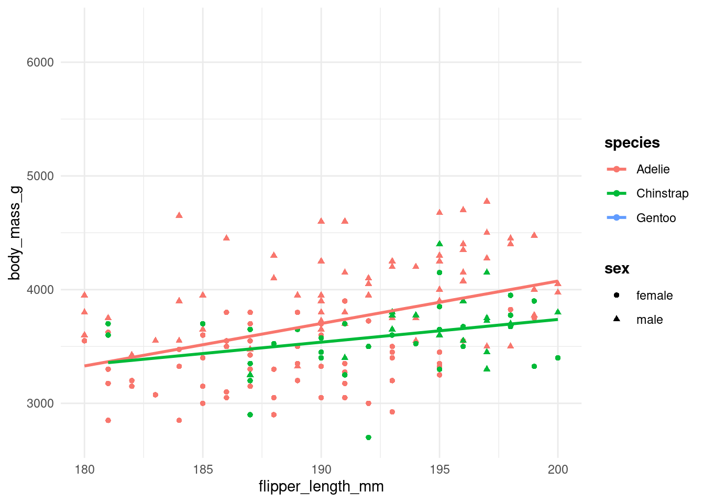
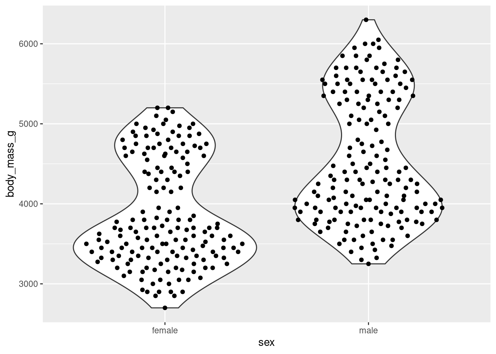
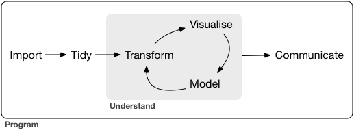
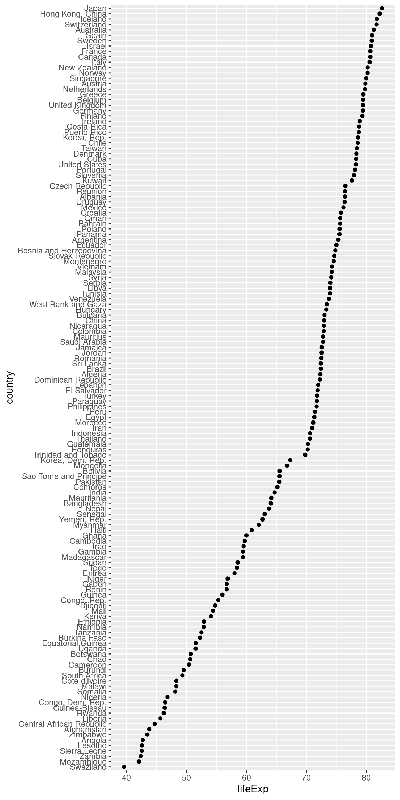
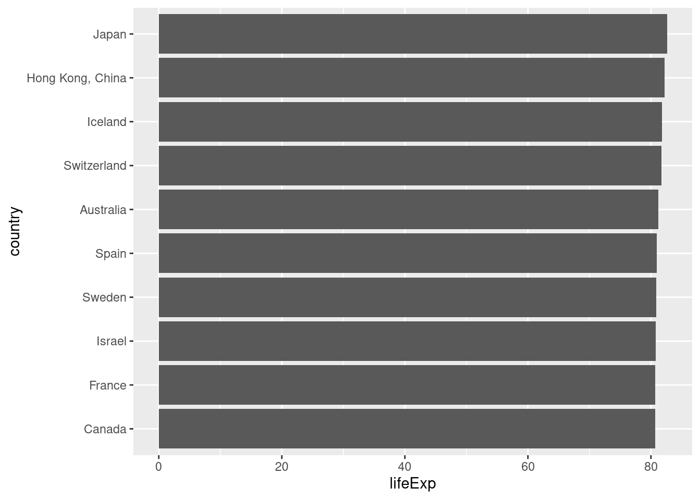

1 + 1[1] 2Jannik
December 28, 2022
This is our abstract.
Markdown text. Bold.
alt - -
tibble [344 × 8] (S3: tbl_df/tbl/data.frame)
$ species : Factor w/ 3 levels "Adelie","Chinstrap",..: 1 1 1 1 1 1 1 1 1 1 ...
$ island : Factor w/ 3 levels "Biscoe","Dream",..: 3 3 3 3 3 3 3 3 3 3 ...
$ bill_length_mm : num [1:344] 39.1 39.5 40.3 NA 36.7 39.3 38.9 39.2 34.1 42 ...
$ bill_depth_mm : num [1:344] 18.7 17.4 18 NA 19.3 20.6 17.8 19.6 18.1 20.2 ...
$ flipper_length_mm: int [1:344] 181 186 195 NA 193 190 181 195 193 190 ...
$ body_mass_g : int [1:344] 3750 3800 3250 NA 3450 3650 3625 4675 3475 4250 ...
$ sex : Factor w/ 2 levels "female","male": 2 1 1 NA 1 2 1 2 NA NA ...
$ year : int [1:344] 2007 2007 2007 2007 2007 2007 2007 2007 2007 2007 ...[1] Adelie Adelie Adelie Adelie Adelie Adelie
Levels: Adelie Chinstrap Gentooctrl + shift + M
[1] 11 12 13 14 15 16 17 18 19 20 [1] 11 12 13 14 15 16 17 18 19 20Grammar of Graphics
https://ggplot2.tidyverse.org/
plt <- penguins |>
drop_na() |>
ggplot(aes(flipper_length_mm, body_mass_g, shape = sex, color = species)) +
geom_point() +
theme_minimal() +
theme(
legend.title = element_text(face = "bold")
) +
geom_smooth(method = "lm", se = FALSE, aes(group = species)) +
scale_x_continuous(limits = c(180, 200))
# lims(x = c(180, 200)) +
# coord_cartesian(xlim = c(180, 200))
plt
Hey, look at Figure 1!
penguins |>
drop_na() |>
ggplot(aes(sex, body_mass_g)) +
geom_violin() +
ggbeeswarm::geom_quasirandom()
Is there a relationship between flipper length and body mass? How is this influenced by sex and species? Experiment with different visualizations!
# A tibble: 344 × 3
species island bill_length_mm
<fct> <fct> <dbl>
1 Adelie Torgersen 39.1
2 Adelie Torgersen 39.5
3 Adelie Torgersen 40.3
4 Adelie Torgersen NA
5 Adelie Torgersen 36.7
6 Adelie Torgersen 39.3
7 Adelie Torgersen 38.9
8 Adelie Torgersen 39.2
9 Adelie Torgersen 34.1
10 Adelie Torgersen 42
# … with 334 more rows# A tibble: 344 × 7
island bill_length_mm bill_depth_mm flipper_length_… body_mass_g sex year
<fct> <dbl> <dbl> <int> <int> <fct> <int>
1 Torger… 39.1 18.7 181 3750 male 2007
2 Torger… 39.5 17.4 186 3800 fema… 2007
3 Torger… 40.3 18 195 3250 fema… 2007
4 Torger… NA NA NA NA <NA> 2007
5 Torger… 36.7 19.3 193 3450 fema… 2007
6 Torger… 39.3 20.6 190 3650 male 2007
7 Torger… 38.9 17.8 181 3625 fema… 2007
8 Torger… 39.2 19.6 195 4675 male 2007
9 Torger… 34.1 18.1 193 3475 <NA> 2007
10 Torger… 42 20.2 190 4250 <NA> 2007
# … with 334 more rows# A tibble: 344 × 2
bill_length_mm bill_depth_mm
<dbl> <dbl>
1 39.1 18.7
2 39.5 17.4
3 40.3 18
4 NA NA
5 36.7 19.3
6 39.3 20.6
7 38.9 17.8
8 39.2 19.6
9 34.1 18.1
10 42 20.2
# … with 334 more rowspenguins |>
mutate(
new_column = bill_length_mm * 10,
new_column2 = bill_length_mm - bill_depth_mm
) |>
select(starts_with("new"), everything())# A tibble: 344 × 10
new_column new_column2 species island bill_length_mm bill_depth_mm
<dbl> <dbl> <fct> <fct> <dbl> <dbl>
1 391 20.4 Adelie Torgersen 39.1 18.7
2 395 22.1 Adelie Torgersen 39.5 17.4
3 403 22.3 Adelie Torgersen 40.3 18
4 NA NA Adelie Torgersen NA NA
5 367 17.4 Adelie Torgersen 36.7 19.3
6 393 18.7 Adelie Torgersen 39.3 20.6
7 389 21.1 Adelie Torgersen 38.9 17.8
8 392 19.6 Adelie Torgersen 39.2 19.6
9 341 16 Adelie Torgersen 34.1 18.1
10 420 21.8 Adelie Torgersen 42 20.2
# … with 334 more rows, and 4 more variables: flipper_length_mm <int>,
# body_mass_g <int>, sex <fct>, year <int># A tibble: 1 × 1
hello
<dbl>
1 43.9
readrtidyrdplyrggplot2tidymodels [1] "country,continent,year,lifeExp,pop,gdpPercap"
[2] "Afghanistan,Asia,1952,28.801,8425333,779.4453145"
[3] "Afghanistan,Asia,1957,30.332,9240934,820.8530296"
[4] "Afghanistan,Asia,1962,31.997,10267083,853.10071"
[5] "Afghanistan,Asia,1967,34.02,11537966,836.1971382"
[6] "Afghanistan,Asia,1972,36.088,13079460,739.9811058"
[7] "Afghanistan,Asia,1977,38.438,14880372,786.11336"
[8] "Afghanistan,Asia,1982,39.854,12881816,978.0114388"
[9] "Afghanistan,Asia,1987,40.822,13867957,852.3959448"
[10] "Afghanistan,Asia,1992,41.674,16317921,649.3413952"# A tibble: 1,704 × 6
country continent year lifeExp pop gdpPercap
<chr> <chr> <dbl> <dbl> <dbl> <dbl>
1 Afghanistan Asia 1952 28.8 8425333 779.
2 Afghanistan Asia 1957 30.3 9240934 821.
3 Afghanistan Asia 1962 32.0 10267083 853.
4 Afghanistan Asia 1967 34.0 11537966 836.
5 Afghanistan Asia 1972 36.1 13079460 740.
6 Afghanistan Asia 1977 38.4 14880372 786.
7 Afghanistan Asia 1982 39.9 12881816 978.
8 Afghanistan Asia 1987 40.8 13867957 852.
9 Afghanistan Asia 1992 41.7 16317921 649.
10 Afghanistan Asia 1997 41.8 22227415 635.
# … with 1,694 more rows# A tibble: 1,704 × 6
country continent year lifeExp pop gdpPercap
<chr> <chr> <dbl> <dbl> <dbl> <dbl>
1 Afghanistan Asia 1952 28.8 8425333 779.
2 Afghanistan Asia 1957 30.3 9240934 821.
3 Afghanistan Asia 1962 32.0 10267083 853.
4 Afghanistan Asia 1967 34.0 11537966 836.
5 Afghanistan Asia 1972 36.1 13079460 740.
6 Afghanistan Asia 1977 38.4 14880372 786.
7 Afghanistan Asia 1982 39.9 12881816 978.
8 Afghanistan Asia 1987 40.8 13867957 852.
9 Afghanistan Asia 1992 41.7 16317921 649.
10 Afghanistan Asia 1997 41.8 22227415 635.
# … with 1,694 more rowsread_tsv("./data/02/gapminder_tsv.txt") |>
mutate(year = as.integer(year)) |>
mutate(year = paste(as.character(year), "hello" )) |>
mutate(year = parse_number(year))# A tibble: 1,704 × 6
country continent year lifeExp pop gdpPercap
<chr> <chr> <dbl> <dbl> <dbl> <dbl>
1 Afghanistan Asia 1952 28.8 8425333 779.
2 Afghanistan Asia 1957 30.3 9240934 821.
3 Afghanistan Asia 1962 32.0 10267083 853.
4 Afghanistan Asia 1967 34.0 11537966 836.
5 Afghanistan Asia 1972 36.1 13079460 740.
6 Afghanistan Asia 1977 38.4 14880372 786.
7 Afghanistan Asia 1982 39.9 12881816 978.
8 Afghanistan Asia 1987 40.8 13867957 852.
9 Afghanistan Asia 1992 41.7 16317921 649.
10 Afghanistan Asia 1997 41.8 22227415 635.
# … with 1,694 more rowsread_tsv("./data/02/gapminder_tsv.txt") |>
mutate(year = as.character(year),
decade = str_sub(year, 1, 2),
year = str_sub(year, 2, 3)
) |>
select(decade, year, everything()) |>
unite("year", decade, year, sep = "") |>
mutate(year = parse_number(year))# A tibble: 1,704 × 6
year country continent lifeExp pop gdpPercap
<dbl> <chr> <chr> <dbl> <dbl> <dbl>
1 1995 Afghanistan Asia 28.8 8425333 779.
2 1995 Afghanistan Asia 30.3 9240934 821.
3 1996 Afghanistan Asia 32.0 10267083 853.
4 1996 Afghanistan Asia 34.0 11537966 836.
5 1997 Afghanistan Asia 36.1 13079460 740.
6 1997 Afghanistan Asia 38.4 14880372 786.
7 1998 Afghanistan Asia 39.9 12881816 978.
8 1998 Afghanistan Asia 40.8 13867957 852.
9 1999 Afghanistan Asia 41.7 16317921 649.
10 1999 Afghanistan Asia 41.8 22227415 635.
# … with 1,694 more rows# A tibble: 1,704 × 6
country continent year lifeExp pop gdpPercap
<chr> <chr> <dbl> <dbl> <dbl> <dbl>
1 Afghanistan Asia 1952 28.8 8425333 779.
2 Afghanistan Asia 1957 30.3 9240934 821.
3 Afghanistan Asia 1962 32.0 10267083 853.
4 Afghanistan Asia 1967 34.0 11537966 836.
5 Afghanistan Asia 1972 36.1 13079460 740.
6 Afghanistan Asia 1977 38.4 14880372 786.
7 Afghanistan Asia 1982 39.9 12881816 978.
8 Afghanistan Asia 1987 40.8 13867957 852.
9 Afghanistan Asia 1992 41.7 16317921 649.
10 Afghanistan Asia 1997 41.8 22227415 635.
# … with 1,694 more rows# A tibble: 1,704 × 6
country continent year lifeExp pop gdpPercap
<chr> <chr> <dbl> <dbl> <dbl> <dbl>
1 Afghanistan Asia 1952 28.8 8425333 779.
2 Afghanistan Asia 1957 30.3 9240934 821.
3 Afghanistan Asia 1962 32.0 10267083 853.
4 Afghanistan Asia 1967 34.0 11537966 836.
5 Afghanistan Asia 1972 36.1 13079460 740.
6 Afghanistan Asia 1977 38.4 14880372 786.
7 Afghanistan Asia 1982 39.9 12881816 978.
8 Afghanistan Asia 1987 40.8 13867957 852.
9 Afghanistan Asia 1992 41.7 16317921 649.
10 Afghanistan Asia 1997 41.8 22227415 635.
# … with 1,694 more rows# A tibble: 6 × 4
country year cases population
<chr> <int> <int> <int>
1 Afghanistan 1999 745 19987071
2 Afghanistan 2000 2666 20595360
3 Brazil 1999 37737 172006362
4 Brazil 2000 80488 174504898
5 China 1999 212258 1272915272
6 China 2000 213766 1280428583# A tibble: 12 × 4
country year type count
<chr> <int> <chr> <int>
1 Afghanistan 1999 cases 745
2 Afghanistan 1999 population 19987071
3 Afghanistan 2000 cases 2666
4 Afghanistan 2000 population 20595360
5 Brazil 1999 cases 37737
6 Brazil 1999 population 172006362
7 Brazil 2000 cases 80488
8 Brazil 2000 population 174504898
9 China 1999 cases 212258
10 China 1999 population 1272915272
11 China 2000 cases 213766
12 China 2000 population 1280428583# A tibble: 6 × 4
country year cases population
<chr> <int> <int> <int>
1 Afghanistan 1999 745 19987071
2 Afghanistan 2000 2666 20595360
3 Brazil 1999 37737 172006362
4 Brazil 2000 80488 174504898
5 China 1999 212258 1272915272
6 China 2000 213766 1280428583table3 |>
separate(rate, c("cases", "population")) |>
# mutate(across( c(cases, population), parse_number))
mutate(across(where(is.character), parse_guess))# A tibble: 6 × 4
country year cases population
<chr> <int> <dbl> <dbl>
1 Afghanistan 1999 745 19987071
2 Afghanistan 2000 2666 20595360
3 Brazil 1999 37737 172006362
4 Brazil 2000 80488 174504898
5 China 1999 212258 1272915272
6 China 2000 213766 1280428583# A tibble: 3 × 3
country `1999` `2000`
* <chr> <int> <int>
1 Afghanistan 745 2666
2 Brazil 37737 80488
3 China 212258 213766# A tibble: 3 × 3
country `1999` `2000`
* <chr> <int> <int>
1 Afghanistan 19987071 20595360
2 Brazil 172006362 174504898
3 China 1272915272 1280428583left_join(table4a, table4b, by = c("country"),
suffix = c("_cases", "_pop")) |>
pivot_longer(-country) |>
separate(name, c("year", "type")) |>
pivot_wider(names_from = type, values_from = value)# A tibble: 6 × 4
country year cases pop
<chr> <chr> <int> <int>
1 Afghanistan 1999 745 19987071
2 Afghanistan 2000 2666 20595360
3 Brazil 1999 37737 172006362
4 Brazil 2000 80488 174504898
5 China 1999 212258 1272915272
6 China 2000 213766 1280428583left_join(table4a, table4b, by = c("country"),
suffix = c("_cases", "_pop")) |>
pivot_longer(-country, names_sep = "_",
names_to = c("year", "type"))# A tibble: 12 × 4
country year type value
<chr> <chr> <chr> <int>
1 Afghanistan 1999 cases 745
2 Afghanistan 2000 cases 2666
3 Afghanistan 1999 pop 19987071
4 Afghanistan 2000 pop 20595360
5 Brazil 1999 cases 37737
6 Brazil 2000 cases 80488
7 Brazil 1999 pop 172006362
8 Brazil 2000 pop 174504898
9 China 1999 cases 212258
10 China 2000 cases 213766
11 China 1999 pop 1272915272
12 China 2000 pop 1280428583# A tibble: 6 × 3
country year rate
<chr> <int> <chr>
1 Afghanistan 1999 745/19987071
2 Afghanistan 2000 2666/20595360
3 Brazil 1999 37737/172006362
4 Brazil 2000 80488/174504898
5 China 1999 212258/1272915272
6 China 2000 213766/1280428583# A tibble: 1,704 × 1
country
<fct>
1 Afghanistan
2 Afghanistan
3 Afghanistan
4 Afghanistan
5 Afghanistan
6 Afghanistan
7 Afghanistan
8 Afghanistan
9 Afghanistan
10 Afghanistan
# … with 1,694 more rows# A tibble: 2 × 6
country continent year lifeExp pop gdpPercap
<fct> <fct> <int> <dbl> <int> <dbl>
1 Afghanistan Asia 1952 28.8 8425333 779.
2 Afghanistan Asia 1957 30.3 9240934 821.# A tibble: 5 × 6
# Groups: continent [5]
country continent year lifeExp pop gdpPercap
<fct> <fct> <int> <dbl> <int> <dbl>
1 Australia Oceania 2007 81.2 20434176 34435.
2 Canada Americas 2007 80.7 33390141 36319.
3 Iceland Europe 2007 81.8 301931 36181.
4 Japan Asia 2007 82.6 127467972 31656.
5 Reunion Africa 2007 76.4 798094 7670.# A tibble: 1,704 × 6
# Rowwise:
country continent year lifeExp pop gdpPercap
<fct> <fct> <int> <dbl> <int> <dbl>
1 Afghanistan Asia 1952 28.8 8425333 779.
2 Afghanistan Asia 1957 30.3 9240934 821.
3 Afghanistan Asia 1962 32.0 10267083 853.
4 Afghanistan Asia 1967 34.0 11537966 836.
5 Afghanistan Asia 1972 36.1 13079460 740.
6 Afghanistan Asia 1977 38.4 14880372 786.
7 Afghanistan Asia 1982 39.9 12881816 978.
8 Afghanistan Asia 1987 40.8 13867957 852.
9 Afghanistan Asia 1992 41.7 16317921 649.
10 Afghanistan Asia 1997 41.8 22227415 635.
# … with 1,694 more rowsdf <- tibble(x = runif(6), y = runif(6), z = runif(6))
df |>
rowwise() |>
mutate(m = mean(c(x, y, z)))# A tibble: 6 × 4
# Rowwise:
x y z m
<dbl> <dbl> <dbl> <dbl>
1 0.179 0.775 0.306 0.420
2 0.483 0.104 0.130 0.239
3 0.653 0.0914 0.480 0.408
4 0.341 0.602 0.257 0.400
5 0.644 0.543 0.114 0.434
6 0.246 0.820 0.863 0.643# A tibble: 6 × 4
x y z m
<dbl> <dbl> <dbl> <dbl>
1 0.179 0.775 0.306 0.420
2 0.483 0.104 0.130 0.239
3 0.653 0.0914 0.480 0.408
4 0.341 0.602 0.257 0.400
5 0.644 0.543 0.114 0.434
6 0.246 0.820 0.863 0.643# A tibble: 6 × 2
id `mean(value)`
<int> <dbl>
1 1 0.420
2 2 0.239
3 3 0.408
4 4 0.400
5 5 0.434
6 6 0.643# A tibble: 12 × 6
country continent year lifeExp pop gdpPercap
<fct> <fct> <int> <dbl> <int> <dbl>
1 Argentina Americas 1952 62.5 17876956 5911.
2 Argentina Americas 1957 64.4 19610538 6857.
3 Argentina Americas 1962 65.1 21283783 7133.
4 Argentina Americas 1967 65.6 22934225 8053.
5 Argentina Americas 1972 67.1 24779799 9443.
6 Argentina Americas 1977 68.5 26983828 10079.
7 Argentina Americas 1982 69.9 29341374 8998.
8 Argentina Americas 1987 70.8 31620918 9140.
9 Argentina Americas 1992 71.9 33958947 9308.
10 Argentina Americas 1997 73.3 36203463 10967.
11 Argentina Americas 2002 74.3 38331121 8798.
12 Argentina Americas 2007 75.3 40301927 12779.https://dplyr.tidyverse.org/articles/programming.html
Error in `group_by()`:
! Must group by variables found in `.data`.
✖ Column `some_column` is not found.our_count <- function(data, column) {
data |>
group_by({{column}}) |>
summarise(n = n())
}
our_count(gapminder, country)# A tibble: 142 × 2
country n
<fct> <int>
1 Afghanistan 12
2 Albania 12
3 Algeria 12
4 Angola 12
5 Argentina 12
6 Australia 12
7 Austria 12
8 Bahrain 12
9 Bangladesh 12
10 Belgium 12
# … with 132 more rowsour_count2 <- function(data, column) {
column_sym <- sym(column)
data |>
group_by(column = eval(column_sym)) |>
summarise(n = n())
}
our_count2(gapminder, "country")# A tibble: 142 × 2
column n
<fct> <int>
1 Afghanistan 12
2 Albania 12
3 Algeria 12
4 Angola 12
5 Argentina 12
6 Australia 12
7 Austria 12
8 Bahrain 12
9 Bangladesh 12
10 Belgium 12
# … with 132 more rowsand forcats
gapminder |>
filter(year == max(year)) |>
mutate(
country = fct_reorder(country, lifeExp)
) |>
ggplot(aes(lifeExp, country)) +
geom_point()
gapminder |>
filter(year == max(year)) |>
slice_max(lifeExp, n = 10) |>
mutate(
country = fct_reorder(country, lifeExp)
) |>
ggplot(aes(lifeExp, country)) +
geom_col()
theme_set(theme_bw())
gapminder |>
filter(year == max(year)) |>
ggplot(aes(continent, pop, fill = country)) +
geom_col(position = position_dodge(preserve = "single")) +
scale_fill_manual(values = country_colors) +
guides(fill = "none") +
scale_y_continuous(labels = scales::label_number(),
n.breaks = 10)function (x)
{
number(x, accuracy = accuracy, scale = scale, prefix = prefix,
suffix = suffix, big.mark = big.mark, decimal.mark = decimal.mark,
style_positive = style_positive, style_negative = style_negative,
scale_cut = scale_cut, trim = trim, ...)
}
<bytecode: 0x55bf24ecad88>
<environment: 0x55bf24c63750>---
title: Tag 1
author: Jannik
date: today
abstract: |
This is our abstract.
keep-tex: true
execute:
eval: true
echo: true
cache: true
warning: false
---
# Morgenschiene
*Markdown* text.
**Bold**.
```{r}
1 + 1
```
```{r}
0 / 0
```
```{r}
1 * 10
```
```{r}
10 %/% 2
```
```{r}
10 %% 2
```
alt - -
```{r}
x <- 10
x = 10
```
```{r}
x <- 1:10
x + 1
```
```{r}
y <- x^2
y
```
```{r}
mean(x = y)
```
```{r}
library(palmerpenguins)
```
```{r}
#| eval: false
View(penguins)
```
```{r}
str(penguins)
```
```{r}
head(penguins$species)
```
```{r}
library(tidyverse)
```
```{r}
add_one <- function(x) {
x + 1
}
```
ctrl + shift + M
```{r}
x %>% add_one() %>% sum()
```
```{r}
x %>% add_one() %>% sum()
```
```{r}
add_this <- function(x, y) {
x + y
}
```
```{r}
x |> add_this(10)
x %>% add_this(x = 10, y = .)
```
```{r}
x |> (\(x) x + 1)()
```
```{r}
add_one = \(x) + 1
```
```{r}
x |>
(function(x) {x + 1})()
```
Grammar of Graphics
<https://ggplot2.tidyverse.org/>
```{r}
x <- 1:10
x > 5
```
```{r}
c(1, 3, 2, 3)
```
```{r}
#| label: fig-penguin-plot
#| fig-cap: Linear regression on penguin data.
plt <- penguins |>
drop_na() |>
ggplot(aes(flipper_length_mm, body_mass_g, shape = sex, color = species)) +
geom_point() +
theme_minimal() +
theme(
legend.title = element_text(face = "bold")
) +
geom_smooth(method = "lm", se = FALSE, aes(group = species)) +
scale_x_continuous(limits = c(180, 200))
# lims(x = c(180, 200)) +
# coord_cartesian(xlim = c(180, 200))
plt
```
Hey, look at @fig-penguin-plot!
```{r}
penguins |>
drop_na() |>
ggplot(aes(sex, body_mass_g)) +
geom_violin() +
ggbeeswarm::geom_quasirandom()
```
Is there a relationship between flipper length and body mass?
How is this influenced by sex and species?
Experiment with different visualizations!
```{r}
penguins |>
select(species, island, bill_length_mm)
```
```{r}
penguins |>
select(-species)
```
```{r}
penguins |>
select(starts_with("bill"))
```
```{r}
penguins |>
mutate(
new_column = bill_length_mm * 10,
new_column2 = bill_length_mm - bill_depth_mm
) |>
select(starts_with("new"), everything())
```
```{r}
penguins |>
summarise(
hello = mean(bill_length_mm, na.rm = TRUE)
)
```
```{r}
penguins |>
group_by(species) |>
summarise(
m = mean(bill_length_mm, na.rm = TRUE)
) |>
ungroup()
```
# Nachmittagsschiene
## Resources
- <https://jmbuhr.de/dataintro/resources.html>
- <https://quarto.org/>
- <https://posit.co/resources/cheatsheets/>
- <https://r4ds.had.co.nz/>
## Overview

- `readr`
- `tidyr`
- `dplyr`
- `ggplot2`
- `tidymodels`
### Readr
```{r}
path <- "./data/02/gapminder.csv"
read_lines(path, n_max = 10)
```
```{r}
read_csv(path)
```
```{r}
readxl::read_xlsx("./data/02/gapminder.xlsx")
```
```{r}
read_tsv("./data/02/gapminder_tsv.txt") |>
mutate(year = as.integer(year)) |>
mutate(year = paste(as.character(year), "hello" )) |>
mutate(year = parse_number(year))
```
```{r}
read_tsv("./data/02/gapminder_tsv.txt") |>
mutate(year = as.character(year),
decade = str_sub(year, 1, 2),
year = str_sub(year, 2, 3)
) |>
select(decade, year, everything()) |>
unite("year", decade, year, sep = "") |>
mutate(year = parse_number(year))
```
```{r}
read_delim("./data/02/obscure_file.tsv", delim = "~")
```
```{r}
read_csv("./data/02/gapminder_messier.csv", comment = "#", skip = 2)
```
### Tidyr
```{r}
table1
```
```{r}
table2
```
```{r}
table2 |>
pivot_wider(names_from = type,
values_from = count)
```
```{r}
table3 |>
separate(rate, c("cases", "population")) |>
# mutate(across( c(cases, population), parse_number))
mutate(across(where(is.character), parse_guess))
```
```{r}
table4a
```
```{r}
table4b
```
```{r}
left_join(table4a, table4b, by = c("country"),
suffix = c("_cases", "_pop")) |>
pivot_longer(-country) |>
separate(name, c("year", "type")) |>
pivot_wider(names_from = type, values_from = value)
```
```{r}
left_join(table4a, table4b, by = c("country"),
suffix = c("_cases", "_pop")) |>
pivot_longer(-country, names_sep = "_",
names_to = c("year", "type"))
```
```{r}
table5 |>
unite("year", century, year, sep = "") |>
mutate(year = parse_integer(year))
```
```{r}
sort_of_an_array <- expand_grid(x = 1:10, y = x, z = x) |>
mutate(value = rnorm(n()))
```
```{r}
sort_of_an_array |>
group_by(x, y) |>
summarise(mean(value))
```
### Dplyr
```{r}
library(gapminder)
```
```{r}
gapminder |>
select(country)
```
```{r}
gapminder |>
filter(
country == "Afghanistan",
year == 1957 | year == 1952
)
```
```{r}
gapminder |>
group_by(continent) |>
filter(lifeExp == max(lifeExp))
```
- rowwise
```{r}
gapminder |>
rowwise()
```
```{r}
df <- tibble(x = runif(6), y = runif(6), z = runif(6))
df |>
rowwise() |>
mutate(m = mean(c(x, y, z)))
```
```{r}
df |>
mutate(m = (x + y + z) / 3 )
```
```{r}
df |>
mutate(id = 1:n()) |>
pivot_longer(-id) |>
group_by(id) |>
summarise(mean(value))
```
```{r}
palmerpenguins::penguins |>
group_by(species) |>
summarise(m = mean(bill_length_mm, na.rm = TRUE))
```
### Questions
- tidy evaluation / programming with dplyr
```{r}
some_country <- "Argentina"
gapminder |>
filter(country == some_country)
```
<https://dplyr.tidyverse.org/articles/programming.html>
```{r}
#| error: true
some_column <- "country"
gapminder |>
group_by(some_column)
```
```{r}
our_count <- function(data, column) {
data |>
group_by({{column}}) |>
summarise(n = n())
}
our_count(gapminder, country)
```
```{r}
our_count2 <- function(data, column) {
column_sym <- sym(column)
data |>
group_by(column = eval(column_sym)) |>
summarise(n = n())
}
our_count2(gapminder, "country")
```
### ggglot2
and forcats
```{r}
#| fig-height: 12
#| fig-width: 6
#| fig-dpi: 300
gapminder |>
filter(year == max(year)) |>
mutate(
country = fct_reorder(country, lifeExp)
) |>
ggplot(aes(lifeExp, country)) +
geom_point()
```
```{r}
gapminder |>
filter(year == max(year)) |>
slice_max(lifeExp, n = 10) |>
mutate(
country = fct_reorder(country, lifeExp)
) |>
ggplot(aes(lifeExp, country)) +
geom_col()
```
```{r}
theme_set(theme_bw())
gapminder |>
filter(year == max(year)) |>
ggplot(aes(continent, pop, fill = country)) +
geom_col(position = position_dodge(preserve = "single")) +
scale_fill_manual(values = country_colors) +
guides(fill = "none") +
scale_y_continuous(labels = scales::label_number(),
n.breaks = 10)
```
```{r}
scales::label_number()
```
- geom_col / bar, other geoms